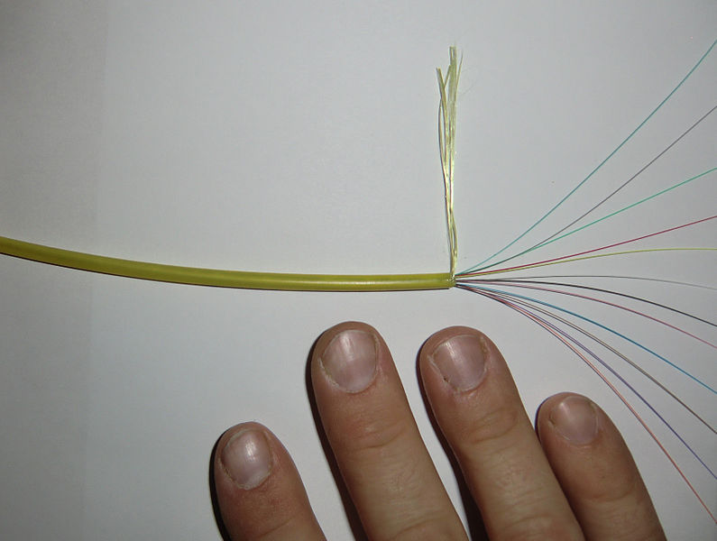
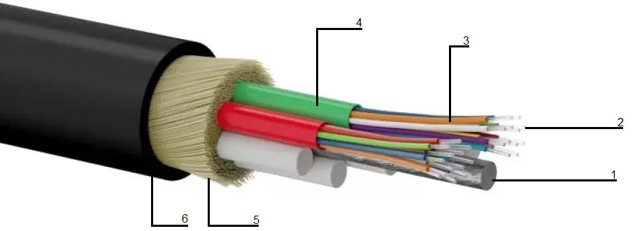
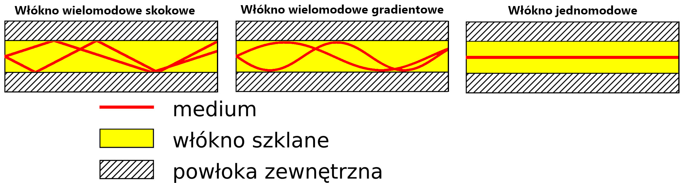
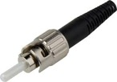
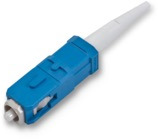
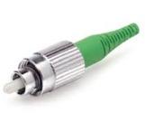
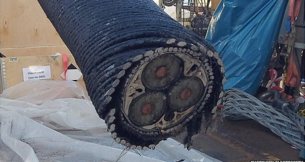
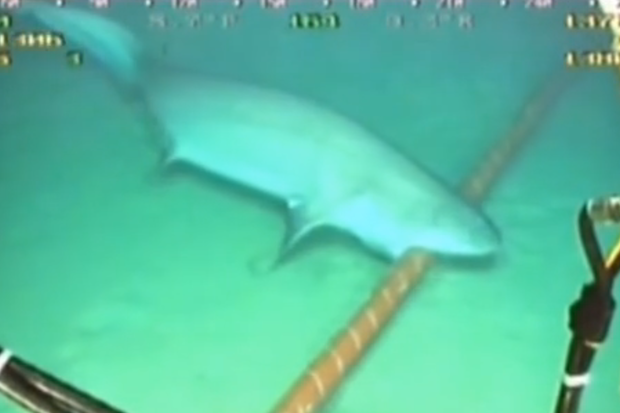
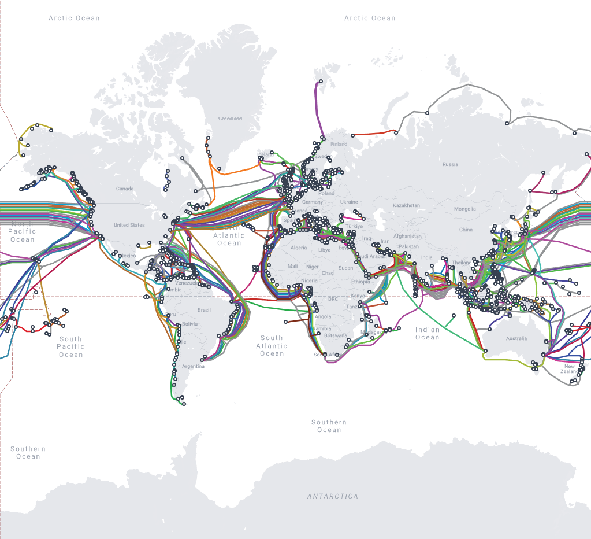

LOKALNE SIECI KOMPUTEROWE / Pasywne elementy składowe sieci
Światłowód
Zarówno skrętka jak i koncentryk do przesyłu danych wykorzystują miedziane druty przez które przechodzi sygnał elektryczny.Natomiast światłowód do przesyłu danych wykożystuje cieniutkie 9 µm mikronowe szklane włókna przez które przechodzi światło.
Ludzki włos ma grubość około 100 µm
Światłowód, czasem nazywany także falowodem optycznym, umożliwia transmisję fali elektromagnetycznej z zakresu widzialnego, ale nie tylko - może w nim rozchodzić się również podczerwień czy ultrafiolet.
Aby zaszło zjawisko całkowitego wewnętrznego odbicia, otaczający go płaszcz musi mieć niższy współczynnik załamania. Można go wykonać z polimeru o tej właściwości bądź szkieł z odpowiednimi domieszkami. Najbardziej zewnętrzną powłokę światłowodu stanowią warstwy ochronne zabezpieczające go przed uszkodzeniami mechanicznymi. 
Budowa światłowodu
- Rdzeń wzmacniający
- Rdzeń - wykonany zwykle ze szkła kwarcowego, tworzywa sztucznego bądź materiałów krystalicznych (np. szafiru)
- Płaszcz rdzenia
- Tuba plastikowa
- Otulina z włókien szklanych
- Płaszcz zewnętrzny
Zasady działania
Oprócz właściwie dobranej różnicy współczynników załamania, światło musi zostać wprowadzone do światłowodu pod odpowiednim kątem (tak, by kąt padania na granicę rdzenia i płaszcza był większy od kąta granicznego.Jeżeli kąt padania bedzie nieodpowiedni wiązka światła zostanie pochłąnięta przez płaszcz rdzenia.)
Ulega ono wówczas odbiciu. Następnie propaguje się dalej, by ponownie trafić w płaszcz rdzenia i znowu się odbić.
Sytuacja ta powtarza się wielokrotnie, a informacja przesyłana jest na gigantyczne odległości. 
| Ilustracja | Typ złącza | Opis | Zalety | Wady |
|  | ST | Złącza te wykorzystują skuwkę 2,5 mm zamontowaną po wewnętrznej stronie obudowy. Jest to złącze starszego typu, ale nadal powszechnie używan | Łatwa instalacja oraz stosunkowo niska cena | Złącze jest sprężynowe co ocnacza że przy podłączeniu trzeba kabel dopchnąć i obrucić, co po parunastu połączeniach staje się upierdliwe |
|  | SC | Złącza te wykorzystują skuwkę 2,5 mm, zostało wynalezione w celu bezpośredniej wymiany złączy ST, dzięki czemu stało się jednym z najbardziej popularnych złączy światłowodowych na świecie | Złącze SC to tak zwane nieoptyczne złącze rozłączające. Termin ten oznacza, że po zainstalowaniu złącza, pchnięcie lub pociągnięcie płaszcza kabla nie spowoduje odłączenia okucia, co jest powszechnym problemem w złączach modelu ST | Główną wadą złącza SC jest to, że jego kwadratowy korpus jest łatwiejszy do włożenia / wyjęcia, korpus jest większy niż złącze LC, co oznacza, że zajmie więcej miejsca niż jego nowszy kuzyn |
|  | FC | Złącze FC wykorzystuje również skuwkę 2,5 mm. Złącze to ma okrągły profil, taki jak złącza ST, ale zamiast być wyposażone w sprężynowy mechanizm blokujący, złącze to ma połączenie gwintowane | Podobnie jak złącze SC, złącze FC ma również zaletę nie-optycznego rozłączania. Ponieważ złącze to łączy się z połączeniem, możesz mieć pewność, że to złącze pozostanie stabilne i dopasowane do jego połączenia, nawet w trudniejszych warunkach | Podobnie jak SC jest trudne w instalacji |
Te bydle na poniższym zdjeciu to światłowód jednomodowy poodmorski ( miedzy kontynentalny ):  Czasem zdarza sie że rekiny przegryzają instalacje
🦈
 Poniżej przedstawiam podwodne połączenia światłowodowe z strony submarinecablemap.com 